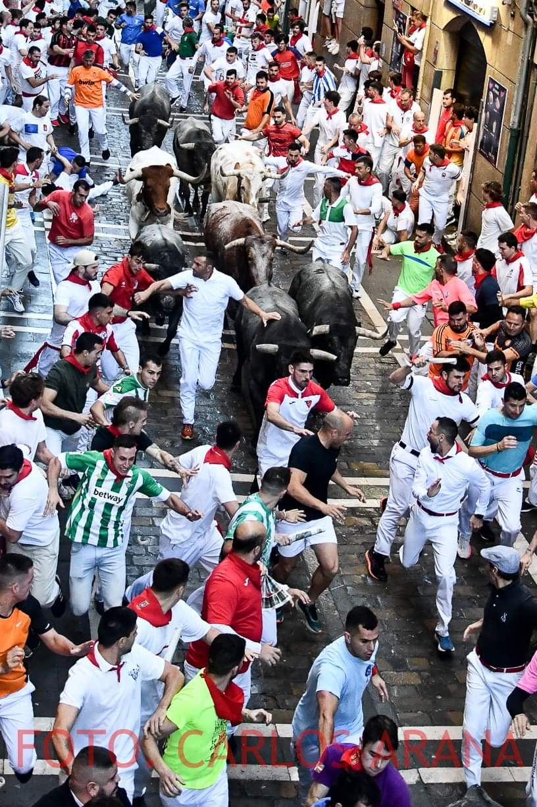
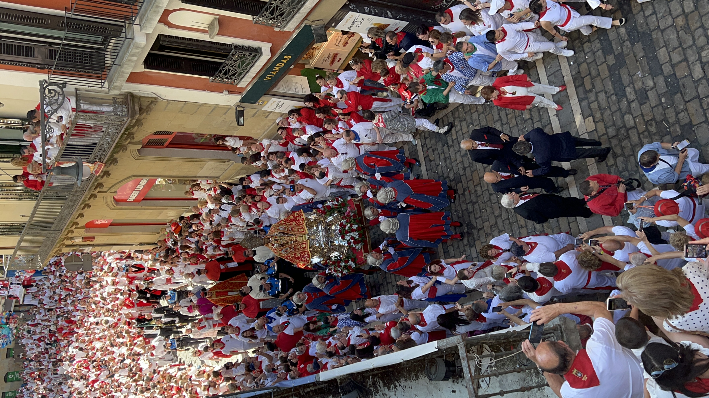

Una forma diferente de vivir San Fermín
San Fermín es mucho más que una fiesta. Durante ocho días, Pamplona se transforma en un entorno lleno de momentos únicos donde tradición, emoción y ambiente se viven de forma continua.
Nuestras experiencias están pensadas para quienes buscan algo más que estar: desde ver el encierro desde un balcón privado hasta vivir el chupinazo o descubrir momentos más exclusivos de la fiesta. Cada propuesta se adapta a lo que quieres vivir, con un enfoque cuidado y personalizado.
Si es tu primera vez o quieres entender mejor cómo organizar tu experiencia, puedes empezar por nuestras guías sobre qué hacer en San Fermín.
Explora las experiencias





Cómo elegir tu experiencia
Cada momento de San Fermín se vive de forma diferente. El encierro concentra intensidad y emoción, el chupinazo marca el inicio de la fiesta y la procesión refleja su lado más tradicional.
Si buscas una experiencia completa, puedes combinar varias propuestas o explorar opciones más especiales como las esperiencias personalizadas, diseñados a medida.
Muchas de estas experiencias forman parte de una forma más amplia de vivir San Fermín, como explicamos en nuestras guías sobre experiencias exclusivas.
Una historia que se vive desde dentro
Hay fiestas. Y luego está San Fermín.
Durante ocho días, Pamplona se transforma con una intensidad difícil de explicar. No es solo una celebración; es una forma de estar, de compartir y de formar parte de algo que viene de lejos.
Este proyecto nace desde dentro, desde una relación real con la fiesta. No como una oferta más, sino como una forma de compartir San Fermín con quienes buscan vivirlo de una manera diferente.
Cuéntanos cómo quieres vivir San Fermín y te proponemos una experiencia personalizada.
Un recuerdo que va más allá del momento
Algunas experiencias no terminan cuando acaba el evento. Para grupos, empresas o momentos especiales, podemos acompañarlo con piezas diseñadas específicamente para la ocasión.
Desde elementos sencillos hasta detalles más cuidados, todo se plantea como una extensión natural de la experiencia.
Porque a veces lo que se lleva puesto también forma parte de lo vivido.